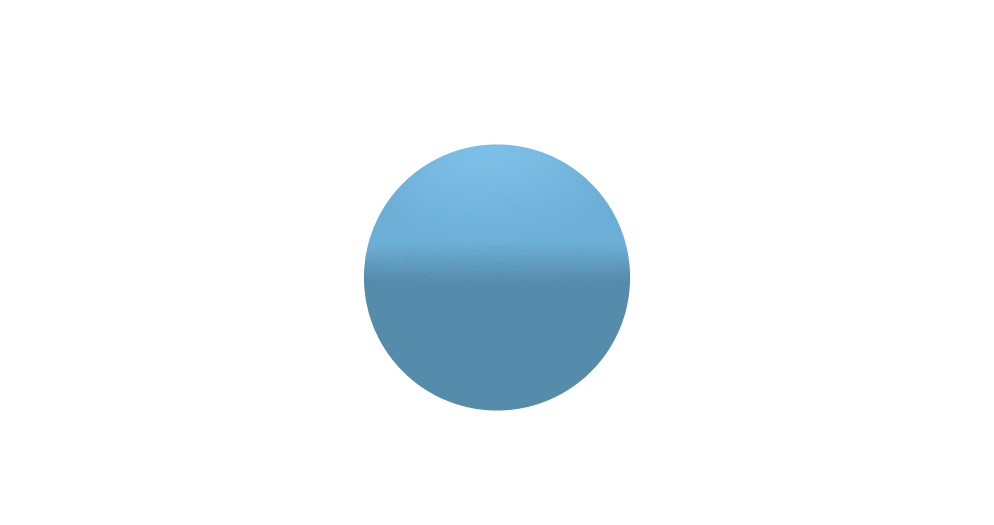
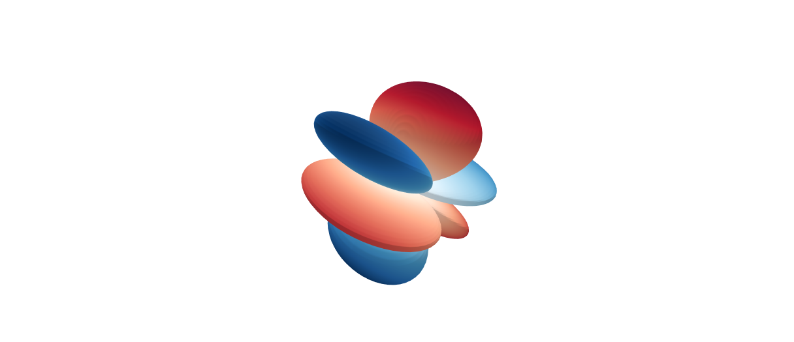
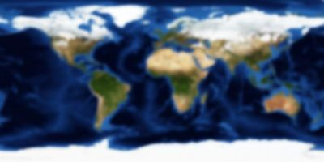
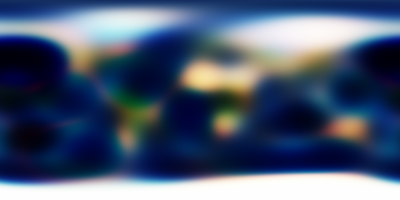
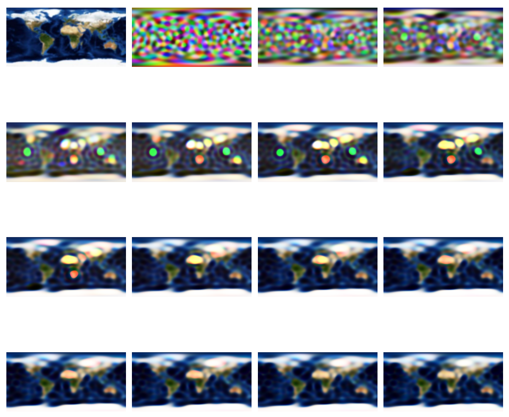
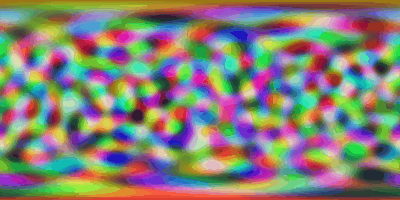

Introduction
In the example of 2D Gaussian Splatting, we use a vector \(c\in\mathbb{R}^3\) to represent the color of a 2D Gaussian. In the 2D case, a Gaussian shows the same color regardless of the viewing direction. In 3D Gaussian Splatting (3DGS), however, it is common to model view-dependent appearance (e.g., Lambertian or glossy surfaces). Therefore, we cannot assign fixed RGB values to each 3D Gaussian, because the color must change based on the viewer’s perspective.
Intuitively, modeling arbitrary view-dependent appearance requires defining a function on the surface of a sphere. While a straightforward approach is to discretize the sphere with a grid and assign a value to each cell, this method introduces a prohibitive number of parameters for each Gaussian—not to mention that we may have tens of thousands of Gaussians in a scene.
A natural approach is to parameterize the spherical function using a set of basis functions. Just as one-dimensional periodic functions on a circle can be expressed as a sum of circular functions (sines and cosines) via Fourier series, spherical functions can be represented as a sum of spherical harmonics, which are a set of orthogonal functions defined on the surface of a sphere.
Spherical Harmonics
Given spherical coordinates \((\theta,\varphi)\) on a unit sphere, spherical harmonics (SH) are defined as \[ Y_{l}^{m}(\theta, \varphi) = \sqrt{\frac{2l+1}{4\pi} \frac{(l-m)!}{(l+m)!}} P_{l}^{m}(\cos\theta) e^{i m \varphi} \] where:
\(l\) is the degree (an integer \(\ge 0\)).
\(m\) is an integer, \(−l\le m\le l\).
\(\theta\) is the polar angle (colatitude), \(0\le\theta\le\pi\).
\(\varphi\) is the azimuthal angle (longitude), \(0\le\varphi<2\pi\).
\(P_l^m(x)\) are the Associated Legendre Polynomials.
Notice that SH are complex-valued functions. Using the definition above, we can derive \(Y_l^m\) for any given \(l\) and \(m\). For example:
\(l=0\)
\[ Y_0^0(\theta, \varphi) = \frac{1}{2}\sqrt{\frac{1}{\pi}} \]
\(l=1\)
\[ \begin{align} Y_1^{-1}(\theta, \varphi) &= \frac{1}{2}\sqrt{\frac{3}{2\pi}} \cdot \mathrm{e}^{-i\varphi} \cdot \sin \theta \\ Y_1^0(\theta, \varphi) &= \frac{1}{2}\sqrt{\frac{3}{\pi}} \cdot \cos \theta \\ Y_1^1(\theta, \varphi) &= -\frac{1}{2}\sqrt{\frac{3}{2\pi}} \cdot \mathrm{e}^{i\varphi} \cdot \sin \theta \end{align} \]
\(l=2\)
\[ \begin{align} Y_2^{-2}(\theta, \varphi) &= \frac{1}{4}\sqrt{\frac{15}{2\pi}} \cdot \mathrm{e}^{-2i\varphi} \cdot \sin^2 \theta \\ Y_2^{-1}(\theta, \varphi) &= \frac{1}{2}\sqrt{\frac{15}{2\pi}} \cdot \mathrm{e}^{-i\varphi} \cdot \sin \theta \cdot \cos \theta \\ Y_2^0(\theta, \varphi) &= \frac{1}{4}\sqrt{\frac{5}{\pi}} (3 \cos^2 \theta - 1) \\ Y_2^1(\theta, \varphi) &= -\frac{1}{2}\sqrt{\frac{15}{2\pi}} \cdot \mathrm{e}^{i\varphi} \cdot \sin \theta \cdot \cos \theta \\ Y_2^2(\theta, \varphi) &= \frac{1}{4}\sqrt{\frac{15}{2\pi}} \cdot \mathrm{e}^{2i\varphi} \cdot \sin^2 \theta \end{align} \]
\(l=3\) \[ \begin{align} Y_3^{-3}(\theta, \varphi) &= \frac{1}{8} \sqrt{\frac{35}{\pi}} \cdot e^{-3i\varphi} \cdot \sin^3 \theta \\ Y_3^{-2}(\theta, \varphi) &= \frac{1}{4} \sqrt{\frac{105}{2\pi}} \cdot e^{-2i\varphi} \cdot \sin^2 \theta \cdot \cos \theta \\ Y_3^{-1}(\theta, \varphi) &= \frac{1}{8} \sqrt{\frac{21}{\pi}} \cdot e^{-i\varphi} \cdot \sin \theta \cdot (5 \cos^2 \theta - 1) \\ Y_3^{0}(\theta, \varphi) &= \frac{1}{4} \sqrt{\frac{7}{\pi}} \cdot (5 \cos^3 \theta - 3 \cos \theta) \\ Y_3^{1}(\theta, \varphi) &= -\frac{1}{8} \sqrt{\frac{21}{\pi}} \cdot e^{i\varphi} \cdot \sin \theta \cdot (5 \cos^2 \theta - 1) \\ Y_3^{2}(\theta, \varphi) &= \frac{1}{4} \sqrt{\frac{105}{2\pi}} \cdot e^{2i\varphi} \cdot \sin^2 \theta \cdot \cos \theta \\ Y_3^{3}(\theta, \varphi) &= -\frac{1}{8} \sqrt{\frac{35}{\pi}} \cdot e^{3i\varphi} \cdot \sin^3 \theta \end{align} \]
Complex-valued functions are not directly usable in our applications. The real basis of SH is defined as follows: \[ \mathrm{Y}_{\ell}^{m}(\theta, \varphi)=\begin{cases} \sqrt{2}(-1)^{m} \operatorname{Im}[Y_{\ell}^{|m|}] & \text{if } m<0 \\ Y_{\ell}^{0} & \text{if } m=0 \\ \sqrt{2}(-1)^{m} \operatorname{Re}[Y_{\ell}^{m}] & \text{if } m>0 \end{cases} \] Below are visualizations of the real SH for different \(l\) and \(m\) values. Red and blue represent positive and negative regions, respectively.
| \(m=-3\) | \(m=-2\) | \(m=-1\) | \(m=0\) | \(m=1\) | \(m=2\) | \(m=3\) | |
|---|---|---|---|---|---|---|---|
| \(l=0\) |  | ||||||
| \(l=1\) | |||||||
| \(l=2\) | |||||||
| \(l=3\) |  |
The above visualizations were created using Colab:  .
.
Rendering
The original 3DGS paper uses SH of degree 2 (\(l = 2\)), which requires 9 coefficients per color channel for a total of 27 SH coefficients per Gaussian. More generally, given a viewing angle \((\theta, \varphi)\) and coefficients \(k_l^m\), the color can be determined by \[ c(\theta,\varphi,k_l^m)=\sigma\left(\sum_{l=0}^L\sum_{m=-l}^l k_l^m \mathrm{Y}_{l}^{m}(\theta, \varphi)\right) \tag{1} \] where \(\sigma\) is the sigmoid function, used to normalize the values to \([0, 1]\).
Experiment
In this section, we use a small example to show how SH can approximate spherical functions. We use a world map as the target spherical function we aim to approximate. The picture is shown below. We use an equirectangular projection for visualization purposes, but the computation is performed on the surface of a sphere.

Next, we sample 500 points on the sphere. These are the locations at which we approximate the target function with SH. How do we uniformly sample points on a sphere? There are many methods; here we use a simple method called the Fibonacci lattice.
We randomly initialize the coefficients \(k_l^m\) and compute the values at the 500 points using Equation (1). We then compare these values with the target function to compute the \(l2\) loss. We run the Adam optimizer to iteratively find optimal values for \(k_l^m\). Detailed code is in the repository: 
For each experiment, we sample 500 points and run 5,000 iterations. The results below show the approximated image at iteration 5,000 for \(L = 10\), \(20\), and \(30\). We can see that larger \(L\) helps recover more details in the approximated image.
L = 10 
L = 20
L = 30
The first image is the ground truth. The sequence beginning with the second image shows how the appoximated image evolves as training progresses.

Animation showing the training progress.
